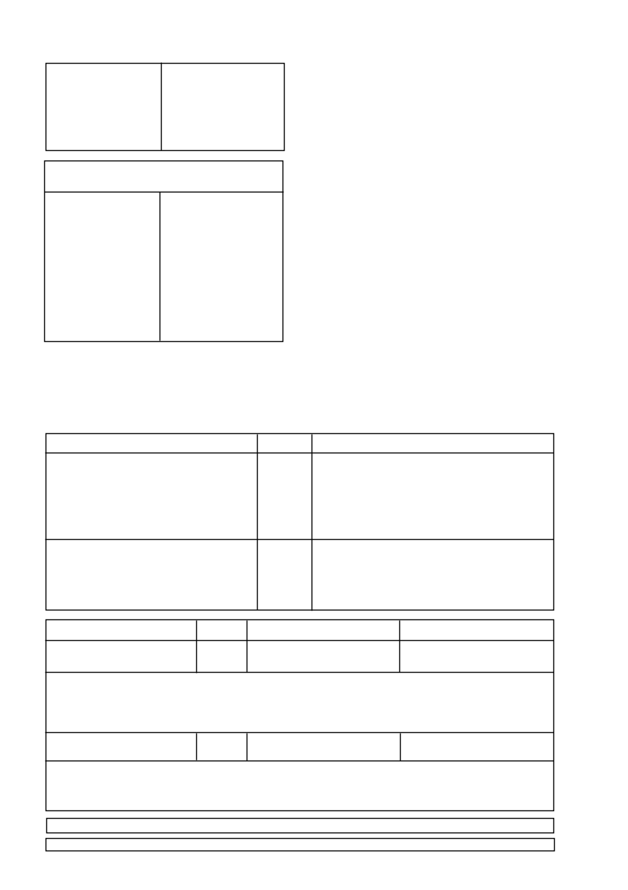

5.
ONKRUIDE WAT BEHEER WORD
Amaranthus hybridus
gewone misbredie
Amaranthus deflexus
meerjarige misbredie
Amaranthus thunbergii
rooimisbredie
Citrullus lanatus
karkoer
Datura stramonium
stinkblaar
Datura ferox
grootstinkblaar
Erigeron bonariensis
vaalskraalhans
Tagetes minuta
kakiebos
Onkruide wat beheer word deur BANVEL 480 SL plus
atrasien
Amaranthus hybridus
gewone misbredie
Amaranthus deflexus
meerjarige misbredie
Amaranthus thunbergii
rooimisbredie
Chenopodium album
withondebossie
Citrullus lanatus
karkoer
Cleome monophylla
rusperbossie
Commelina benghalensis
Bengaalse wandelende Jood
Datura stramonium
stinkblaar
Datura ferox
grootstinkblaar
Ipomoea purpurea
purperwinde
Portulaca oleracea
porselein
Schkuhria pinnata
kleinkakiebos
Tagetes minuta
kakiebos
Xanthium strumarium
kankerroos
6. GEBRUIKSAANWYSINGS
Gebruik slegs soos aangedui
6.1
VERENIGBAARHEID
Die verenigbaarheid van
BANVEL 480 SL
met ander produkte
kan beïnvloed word deur die formulasie van die betrokke produkte
asook deur die kwaliteit van die water. Aangesien die formulasie
van produkte kan verander sonder die medewete van Syngenta
en die kwaliteit van die water ook van plaas tot plaas kan varieer,
moet ‘n fisiese verenigbaarheidstoets altyd uitge voer word voor-
dat gespuit word.
6.2
MENGSINSTRUKSIES
Plaas skroefdop terug na gebruik.
Vul die tenk halfvol met water. Terwyl geroer word, voeg die
be nodigde hoeveelheid
BANVEL 480 SL
by, vul dan die spuittenk
tot die verlange volume.
Wanneer
BANVEL 480 SL
in kombinasie toegedien word met
produkte wat atrasien, ametrien of diuron bevat, verseker dat
hierdie produkte
voor
die
BANVEL 480 SL
bygevoeg word.
Die mengsel moet tydens vermenging en toediening voort-
durend in roering gehou word.
Tenkmengsels moet dadelik toegedien word en moet nie in
die tenk gelaat word nie.
6.3
TOEDIENINGSTEGNIEKE
6.3.1
Slegs vir grondtoediening
Vermy fyn druppelgroottes - gebruik laedruk platwaaierspuitpunte
van 80º of ekwivalente antiwegdrywing tipe.
Die spuitdruk
moet nie 200 kPa oorskry nie.
Spuitvolume moet 150
l
/
ha oorskry.
‘n Spuithoogte van 50 cm bokant die teiken en ‘n
grondspoed van 10 km/uur moet nie oorskry word nie. Indien die
windspoed hoër is as 15 km/uur (soos bepaal deur ‘n handwind-
meter) moet die produk nie toegedien word nie. Die verskil tussen
die nat- en droëbollesing, soos met ‘n swaaihigrometer bepaal,
moet nie meer as 8°C wees nie.
6.4
TOEDIENINGSHOEVEELHEDE
NOTA:
BANVEL 480 SL WORD NIE AANBEVEEL VIR
GEBRUIK
OP
SAADMIELIES,
SUIKERMIELIES,
SPRINGMIELIES EN ANDER EKSOTIESE KULTIVARS NIE.
BANVEL 480 SL
/ 2
GEWAS
MIELIES
Onkruid vanaf 3 - 6 blaar groeistadium en
Citrullus
spp.
kleiner as 150 mm roset deursnit.
Vir die beheer van
Citrullus
spp. groter as 150 mm
roset deursnit.
GRAANSORGHUM
Onkruid vanaf 3 - 6 blaar groeistadium en
Citrullus
spp.
kleiner as 150 mm roset deursnit.
Vir die beheer van
Citrullus
spp. groter as 150 mm
roset deursnit.
DOSIS / ha
450 m
l
575 m
l
450 m
l
575 m
l
OPMERKINGS
Dien toe nadat gewas opgekom het totdat die gewas 300 mm
hoog is.
Indien die gewas hoër as 300 mm is, moet valarms gebruik word
om die bespuiting te rig onder die blaardak van die mielies.
N.B.
Moenie spuit nadat die gewas 800 mm hoogte bereik het,
tot nadat die sagte deeg stadium bereik is nie.
Dien toe nadat gewas opgekom het totdat the gewas die vol
sesblaar stadium bereik het.
N.B
. Moenie spuit na die vol sesblaar stadium nie.
BANVEL
®
= Geregistreerde Handelsmerk van ‘n Syngenta Groep Maatskappy.
©
Syngenta
AG, 2000.
Kopiereg van die dokument is voorbehou. Alle ongemagtigde vermeerdering word verbied.
SA Reg.:2001-07-09
%
KLEI
Alle grond
Bo 25%
GEWAS
MIELIES
Onkruid vanaf 3 - 6 blaar groeistadium
GRAANSORGHUM
Onkruid vanaf 3 - 6 blaar groeistadium
BANVEL 480 SL + Atrazine 800 WP
250 - 320 m
l
+ 1,25 kg
250 - 320 m
l
+ 1,25 kg
BANVEL 480 SL + Atrazine 500 SC
250 - 320 m
l
+ 2
l
250 - 320 m
l
+ 2
l
OPMERKINGS:
Gebruik hoër dosis
BANVEL 480 SL
in geval van groter onkruide en/of hoë onkruiddruk.
Dien toe nadat gewas opgekom het totdat die gewas 300 mm hoog is.
Indien die gewas hoër as 300 mm is, moet valarms gebruik word om die bespuiting te rig onder die blaardak van die mielies.
N.B.
Moenie spuit nadat die gewas 800 mm hoogte bereik het nie tot nadat die sagte deegstadium bereik is nie.
OPMERKINGS:
Gebruik hoër dosis
BANVEL 480 SL
in geval van groter onkruide en/of hoë onkruiddruk.
Dien toe nadat gewas opgekom het totdat die gewas die vol sesblaar stadium bereik het.
N.B.
Moenie spuit na die sesblaar stadium nie.
